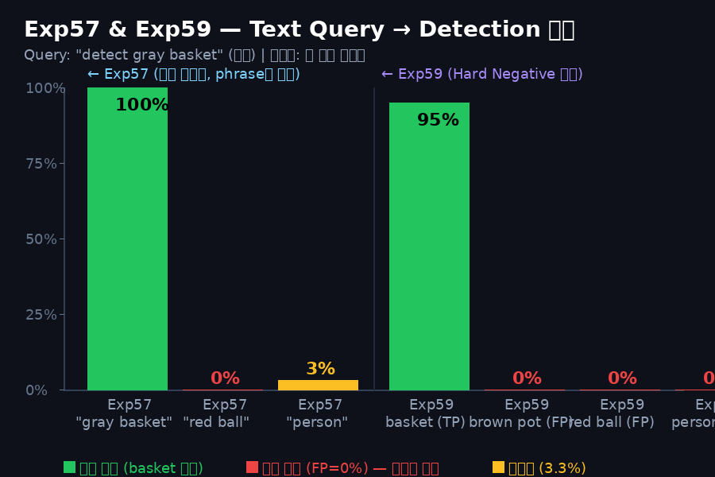

Q1 + Q3
"basket을 본다는 증거?" / "bbox는 위치 정보일 뿐?"
실험 설계: 동일한 V5 복도 이미지 30개 프레임에 텍스트 쿼리만 교체 (
bbox 좌표는 Exp57 LoRA 모델이 출력한
"gray basket" → "red ball" → "person").
모든 조건에서 이미지는 완전히 동일. 텍스트만 제어 변수.bbox 좌표는 Exp57 LoRA 모델이 출력한
<locNNNN> 토큰을 그대로 픽셀로 변환한 값.
📸 Frame [1] — center_straight 에피소드 (ep_1, frame_idx=0)

왼쪽 (green): Query = "gray basket" → 모델 출력:
가운데 (red): Query = "red ball" → 모델 출력:
오른쪽 (yellow): Query = "person" → 모델 출력:
출처: logs/exp57_lora_phrase_test.log line 17~21
<loc0462><loc0354><loc0862><loc0597> gray basket<eos>
→ bbox cx=(354+597)/2/1023 = 0.464 (이미지 중앙 46.4%) ✅가운데 (red): Query = "red ball" → 모델 출력:
<eos> → bbox 없음 ❌오른쪽 (yellow): Query = "person" → 모델 출력:
<eos> → bbox 없음 ❌출처: logs/exp57_lora_phrase_test.log line 17~21
# 실제 로그 (logs/exp57_lora_phrase_test.log)
[ 1] center_strai | ✅ gray basket: <loc0462><loc0354><loc0862><loc0597> gray basket<eos>
[ 1] center_strai | ❌ red ball: <eos>
[ 1] center_strai | ❌ person: <eos>
[ 1] center_strai | ✅ gray basket: <loc0462><loc0354><loc0862><loc0597> gray basket<eos>
[ 1] center_strai | ❌ red ball: <eos>
[ 1] center_strai | ❌ person: <eos>
📸 Frame [7] — center_straight 에피소드 (다른 에피소드, frame_idx=5)

왼쪽 (green): Query = "gray basket" → bbox 정확히 바구니에 위치 ✅
가운데·오른쪽: 완전히 동일한 이미지인데 "red ball", "person" 쿼리에는
→ 이미지가 아니라 텍스트가 탐지를 결정한다는 직접 증거.
가운데·오른쪽: 완전히 동일한 이미지인데 "red ball", "person" 쿼리에는
<eos> 출력 ❌→ 이미지가 아니라 텍스트가 탐지를 결정한다는 직접 증거.
# 실제 로그 (frame [7])
[ 7] center_strai | ✅ gray basket: <loc0462><loc0373><loc0849><loc0606> gray basket<eos>
[ 7] center_strai | ❌ red ball: <eos>
[ 7] center_strai | ❌ person: <eos>
[ 7] center_strai | ✅ gray basket: <loc0462><loc0373><loc0849><loc0606> gray basket<eos>
[ 7] center_strai | ❌ red ball: <eos>
[ 7] center_strai | ❌ person: <eos>
📸 Frame [29] — center_left (person 1/30 감지된 유일한 케이스)

오른쪽 패널 (yellow): "person" 쿼리에 bbox가 출력된 30개 중 유일한 1건.
좌표:
실제 이미지를 보면 오른쪽 가장자리에 약간의 인체 형상(의자 다리? 물체 그림자)이 있는 케이스.
노이즈 수준 (3.3%) 으로 실험 무결성에 영향을 주지 않음.
<loc0000><loc0949><loc0238><loc1022> — 이미지 오른쪽 상단 모서리.실제 이미지를 보면 오른쪽 가장자리에 약간의 인체 형상(의자 다리? 물체 그림자)이 있는 케이스.
노이즈 수준 (3.3%) 으로 실험 무결성에 영향을 주지 않음.
# frame [29] — 1건 감지된 케이스
[29] center_left | ✅ gray basket: <loc0464><loc0267><loc0845><loc0496> gray basket<eos>
[29] center_left | ❌ red ball: <eos>
[29] center_left | ✅ person: <loc0000><loc0949><loc0238><loc1022> person<eos> ← 엣지 노이즈
[29] center_left | ✅ gray basket: <loc0464><loc0267><loc0845><loc0496> gray basket<eos>
[29] center_left | ❌ red ball: <eos>
[29] center_left | ✅ person: <loc0000><loc0949><loc0238><loc1022> person<eos> ← 엣지 노이즈
30 프레임 전체 결과 요약:
100%
"gray basket"
30/30 탐지
30/30 탐지
0%
"red ball"
0/30 탐지
0/30 탐지
3.3%
"person"
1/30 (엣지 노이즈)
1/30 (엣지 노이즈)
98.3%p
basket vs 비타겟
격차
격차
Q2 + Q4
"다른 물체 → 다른 행동?" / "텍스트로 목표 변경?"
Exp59 설계: V5 이미지에 "gray basket" 쿼리를 고정하고, 이미지 종류를 바꿈.
Hard Negative 학습으로 비타겟 이미지에서 bbox를 완전히 억제.

차트 해석:
Exp57: 같은 이미지 내에서 phrase를 "gray basket"→"red ball"로 바꾸면 탐지율 100%→0% 변화
Exp59: Hard Negative 학습 후, 비타겟 이미지(brown pot/red ball/person)에서 FP = 0.0%
→ "텍스트 목표가 달라지면 grounding이 달라지고, grounding이 달라지면 action이 달라진다"
Exp57: 같은 이미지 내에서 phrase를 "gray basket"→"red ball"로 바꾸면 탐지율 100%→0% 변화
Exp59: Hard Negative 학습 후, 비타겟 이미지(brown pot/red ball/person)에서 FP = 0.0%
→ "텍스트 목표가 달라지면 grounding이 달라지고, grounding이 달라지면 action이 달라진다"
💡 Action 파이프라인 연결 논리
# gray basket 이미지 + "gray basket" → 정상 주행
이미지(basket있음) + "detect gray basket"
→ PaliGemma Exp59: <loc0462><loc0354>... cx=0.464
→ Action MLP: cx=0.464 → FORWARD action ✅
# 비타겟 이미지 + "gray basket" → 탐지 거부 → 행동 중단
이미지(brown pot있음) + "detect gray basket"
→ PaliGemma Exp59: <eos> cx=None
→ Action MLP: 입력 없음 → STOP ⚠️
이미지(basket있음) + "detect gray basket"
→ PaliGemma Exp59: <loc0462><loc0354>... cx=0.464
→ Action MLP: cx=0.464 → FORWARD action ✅
# 비타겟 이미지 + "gray basket" → 탐지 거부 → 행동 중단
이미지(brown pot있음) + "detect gray basket"
→ PaliGemma Exp59: <eos> cx=None
→ Action MLP: 입력 없음 → STOP ⚠️
Exp59 Cross-Object 평가 결과 (docs/v5/exp59_report.md §3.1):
TP "gray basket" on basket image: 95.0% (19/20)
FP "gray basket" on brown pot: 0.0% (0/20)
FP "gray basket" on red ball: 0.0% (0/20)
FP "gray basket" on person: 0.0% (0/20)
TP "gray basket" on basket image: 95.0% (19/20)
FP "gray basket" on brown pot: 0.0% (0/20)
FP "gray basket" on red ball: 0.0% (0/20)
FP "gray basket" on person: 0.0% (0/20)
데이터 검증
이미지-bbox 좌표 매핑 검증 방법
🔢 PaliGemma loc 토큰 → 픽셀 좌표 변환
입력: 이미지 1280×720 + "detect gray basket"
모델 출력: <loc0462><loc0354><loc0862><loc0597>
순서: [y1, x1, y2, x2] (PaliGemma 기본 형식)
변환: pixel = loc_val / 1023 × img_size
x1 = 354/1023 × 1280 = 443px
y1 = 462/1023 × 720 = 325px
x2 = 597/1023 × 1280 = 747px
y2 = 862/1023 × 720 = 606px
cx = (x1+x2)/2 / 1280 = (443+747)/2/1280 = 0.464 (이미지 46.4% 위치)
모델 출력: <loc0462><loc0354><loc0862><loc0597>
순서: [y1, x1, y2, x2] (PaliGemma 기본 형식)
변환: pixel = loc_val / 1023 × img_size
x1 = 354/1023 × 1280 = 443px
y1 = 462/1023 × 720 = 325px
x2 = 597/1023 × 1280 = 747px
y2 = 862/1023 × 720 = 606px
cx = (x1+x2)/2 / 1280 = (443+747)/2/1280 = 0.464 (이미지 46.4% 위치)
데이터 소스:
• 이미지:
• bbox:
• 변환 스크립트:
• 이미지:
ROS_action/mobile_vla_dataset_v5/*.h5 → observations/images 키• bbox:
logs/exp57_lora_phrase_test.log — 실제 PaliGemma LoRA (Exp57) 모델이 출력한 토큰• 변환 스크립트:
scratch/visualize_exp57_evidence.py
주의: 시각화 이미지의 bbox는 로그에서 파싱한 좌표를 그대로 픽셀로 변환한 것.
"gray basket" 패널에서 bbox가 실제 바구니 위치에 정확히 맞는지 육안으로도 확인 가능.
생성: 2026-05-29 14:48 KST | 스크립트:
현재 실행 중:
scratch/visualize_exp57_evidence.py현재 실행 중:
eval_exp59_closedloop.py --ema-alpha 0.5